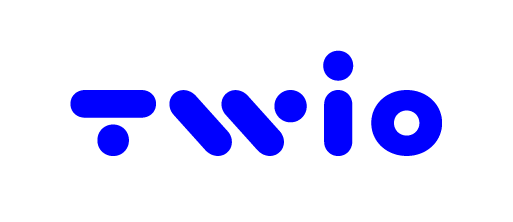
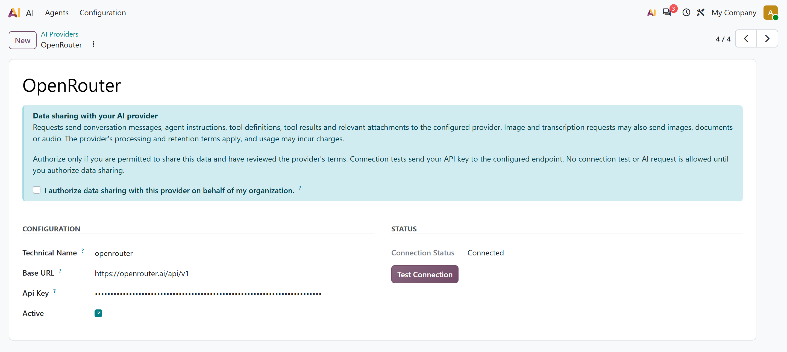
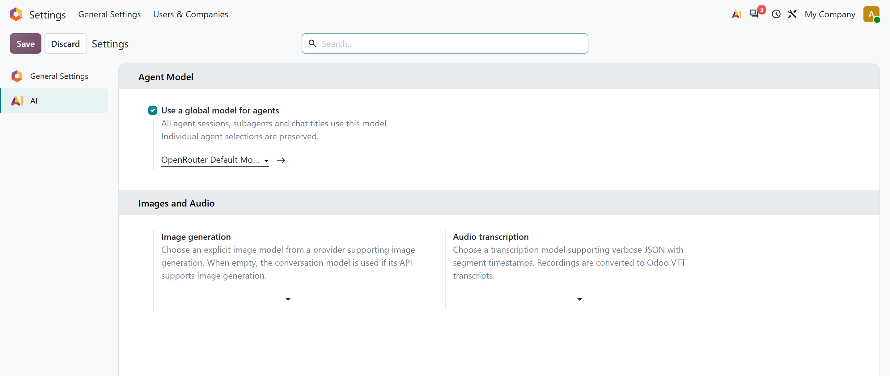
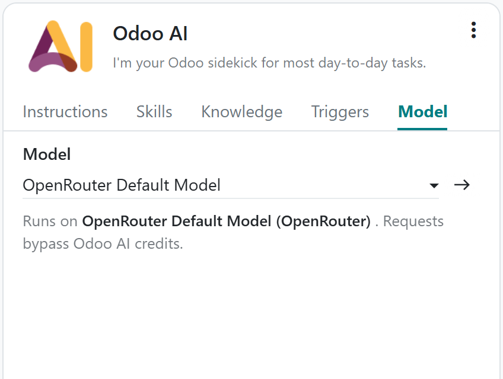

Odoo AI.
Use OpenRouter and compatible AI models inside Odoo.
Connect your own provider account to Odoo AI agents. Choose one model for your team or a different model for each agent, while keeping conversations in the Odoo workspace.
Free module · Provider usage billed separately · English & German interface
Use your OpenRouter account default or specify model IDs. Other providers can be added through a compatible OpenAI API endpoint.
Set a shared model in Settings or choose models individually. Custom-provider requests use your account instead of Odoo AI credits.
Select compatible models for image generation and speech-to-text in the existing Odoo workflows.
Enter your API key, review the data-sharing notice and authorize the provider before testing the connection. The included OpenRouter setup tour guides administrators through the initial configuration.

Enable global routing to apply one conversation model across agents, subagents and chat titles. Configure image generation and audio transcription models separately.

Need different models for different tasks? Disable global routing and select a model on each agent's Model tab.
Individual selections stay saved when global routing is enabled. With global routing disabled, agents without a custom model continue using Odoo AI credits.

On a fresh installation, global routing starts enabled with OpenRouter Default Model. Configure your API key and OpenRouter account default before using an agent. Replay the guided setup from AI > Configuration > OpenRouter Setup Tour.
Odoo 20 Enterprise on Odoo.sh or a self-hosted server, with AI and AI Agents installed. Administrator access is required for setup. This module cannot be installed on Odoo Online.
Yes, through model IDs available to your OpenRouter account. Other endpoints must expose a supported OpenAI-compatible API. Tool use, structured responses and media features depend on the selected model and endpoint.
The module is free under OPL-1. Your AI provider bills usage separately, and an Odoo Enterprise subscription is required. Failed custom-provider requests report an error without silently switching to Odoo AI credits.
Image generation returns images as Odoo attachments. Transcription supports chat voice input and recorded calls; recorded calls require verbose JSON with segment timestamps. Select compatible models and endpoints. Embeddings routing, native web grounding, audio generation and video generation are not included.
No. Add exact model IDs manually, or use OpenRouter Default Model to follow the default in your OpenRouter account.
Requests send conversation messages, agent instructions, tool definitions, tool results and relevant attachments to your configured provider. Image and transcription requests may also send images, documents or audio. Its processing and retention terms apply, and usage may incur charges. An administrator must explicitly authorize each provider before connection tests or AI requests. Authorization can be revoked in the provider form. Changing the endpoint or provider identifier requires renewed authorization. Odoo database neutralization clears keys and authorization, archives providers and resets connection results.